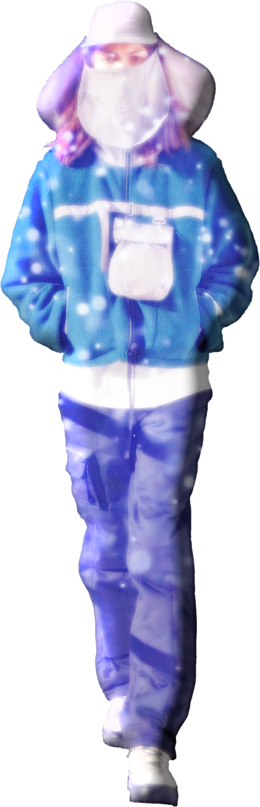
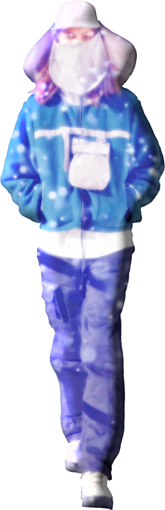
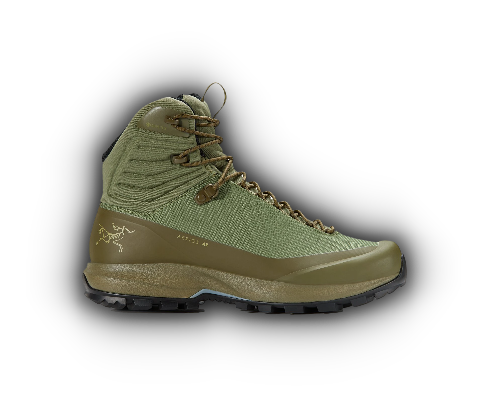
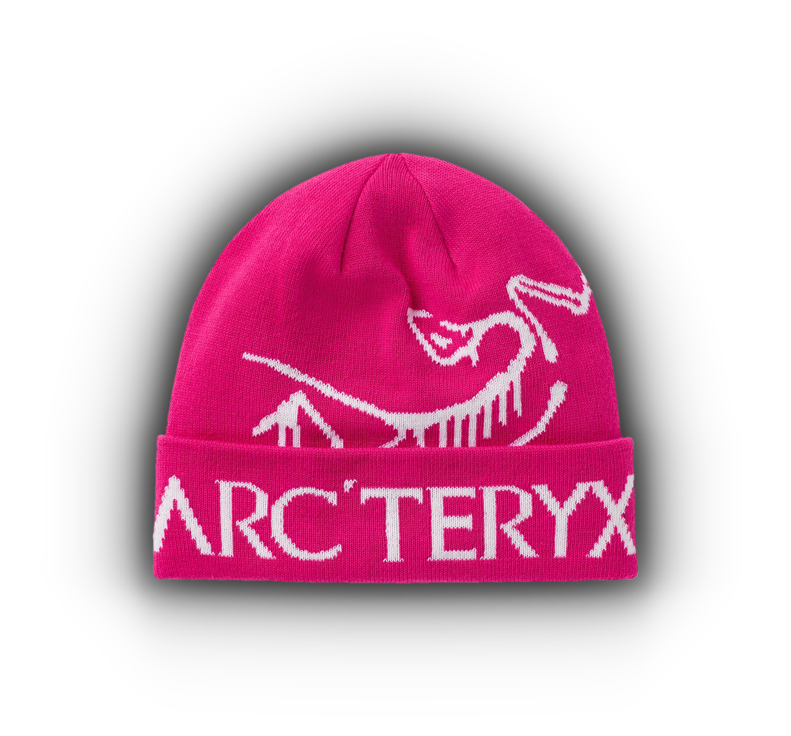
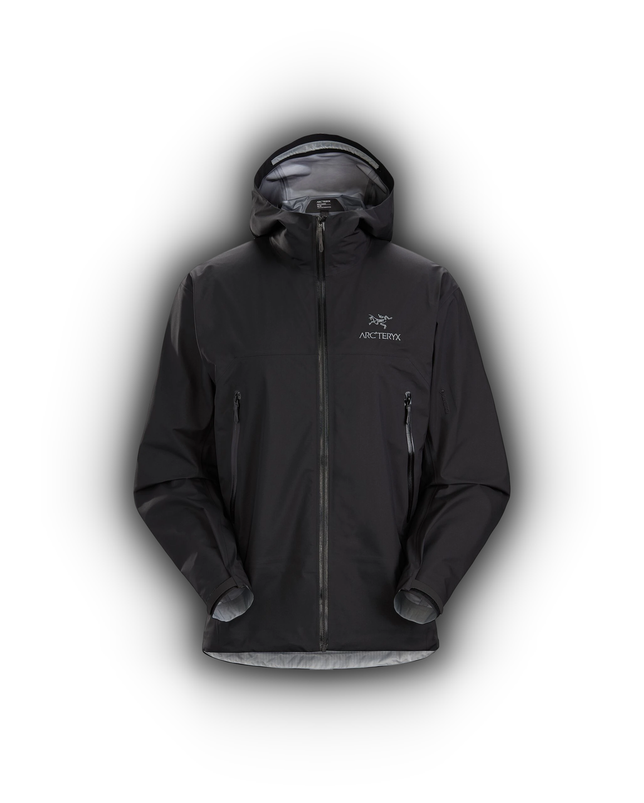
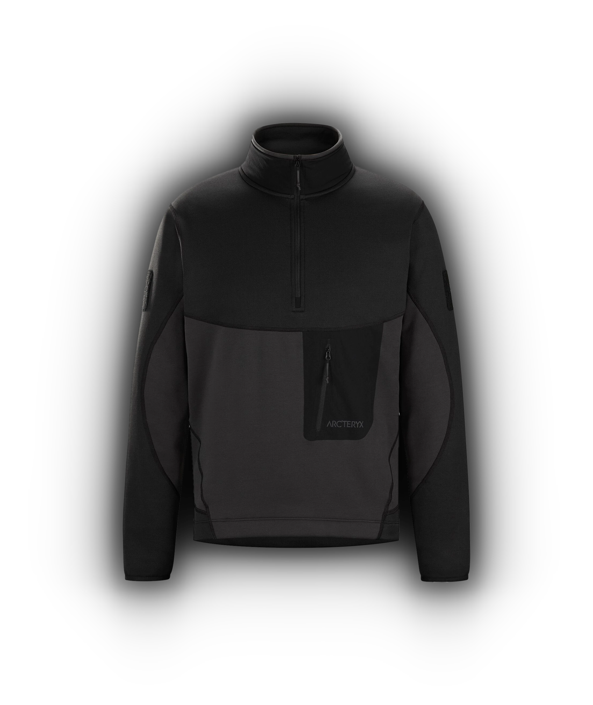

The term "Gorpcore" has only been around for a couple of years, but the history of this style stretches back to the start of clothing itself. Clothes were first created to help us withstand the elements, and that is the essence of Gorpcore, fashion that has utility. The Gorpcore style as we know it today, comes from clothing made for outdoor activities like, camping, hiking, rock climbing, etc. For many years this style was not seen as fashionable, but over time the fashion community realized the artistic potential these clothes could have. As a result, Gorpcore has become one of the fastest growing subcultures in fashion.

Dave Lane created Arc'teryx, originally called "Rock Solid", in 1989. He started the brand in Vancouver, British Columbia, and was heavily influenced by the city's outdoorsy culture. For the first couple of years, the company primarily focused on making climbing equipment, but in 1996 they released their first line of outdoor apparel. Arc'teryx became a popular brand in the outdoorsy community, thanks to their high quality products, but they didn't have much notoriety in the fashion world. That completely changed in the late 2010 s when the Gorpcore movement started to take off, and Arc'teryx quickly became one of the biggest names in Gorpcore fashion.
   